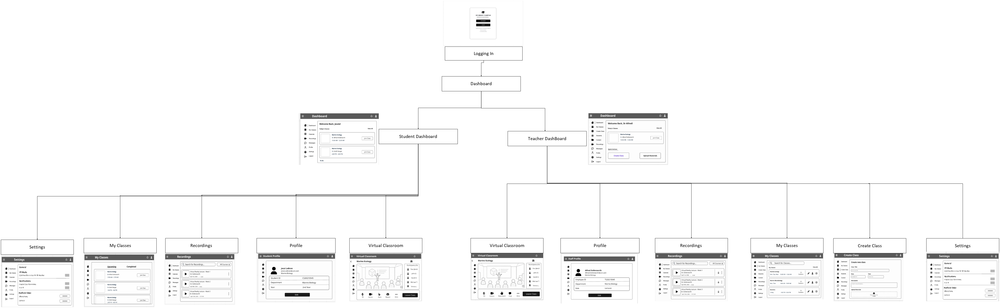

Problem
Traditional online learning often feels passive and lacks engagement compared to in-person education. Students struggle with focus, collaboration, and understanding complex or practical concepts in 2D environments.
As a result, online learning can feel disconnected and less effective for maintaining motivation and interaction.
User Research
Primary research with 10 university students:
- 8/10 students reported lower engagement in online learning compared to in-person classes
- 7/10 struggled to maintain focus during long video lectures
- 9/10 found online collaboration less natural
- 6/10 had difficulty understanding visual or practical concepts
- 8/10 preferred in-person learning for interactive subjects
Additional Insights
- Students want more immersive and interactive learning environments
- Social interaction strongly impacts engagement and motivation
- Passive video learning reduces attention span over time
- Visual/spatial learning improves understanding of complex topics
Design Impact
- Need for immersive VR-based learning environments
- Importance of avatar-based collaboration
- Shift from passive to active learning experiences
Navigation Map
A navigation map was created to visualise how users move through the VR Smart Campus system. It defines key learning spaces such as lecture halls, collaboration zones, and exploration areas.
This ensured the VR environment remained structured and intuitive, reducing cognitive overload in a 3D space.

Solution
VR Smart Campus is a virtual reality platform that recreates a university environment in an immersive digital space. It enables students to attend lectures, collaborate with peers, and explore learning content in a more engaging way.
The goal is to improve engagement and make online learning feel closer to real-world classroom experiences.
Key Features
- Immersive VR classrooms for lectures and tutorials
- Avatar-based collaboration for group interaction
- Interactive 3D learning environments
- Virtual campus exploration spaces
- Accessible remote learning from any location
Design Decisions
- Prioritised immersion over traditional 2D interfaces
- Used spatial environments to support visual learning
- Included avatars to enhance social presence
- Designed for accessibility in remote education
- Focused on experience-driven learning rather than static UI
My Role
- Defined and analysed the core problem of low engagement in online learning
- Developed the VR Smart Campus concept and overall solution direction
- Created detailed flow and navigation diagrams for system structure
- Ensured clarity and usability of the virtual learning experience
- This project was completed in a group where we collaboratively developed personas, rich pictures, navigation maps, walkthroughs, DFDs, ERDs, state transition models, interaction patterns, storyboards, wireframes, and object analysis tables
Reflection
What I learned:
- How immersive environments can improve engagement in learning
- The importance of interaction and presence in digital education
- How system structure impacts usability in complex VR environments
- The value of designing beyond traditional 2D interfaces
Skills developed:
- Breaking down complex systems into structured user flows
- Using research to support design decisions
- Designing for immersive and spatial environments
- Working collaboratively on system-level UX artefacts
Next Steps
Future development would focus on prototyping VR interactions, testing usability in immersive environments, and exploring subject-specific adaptations for different types of learning experiences.